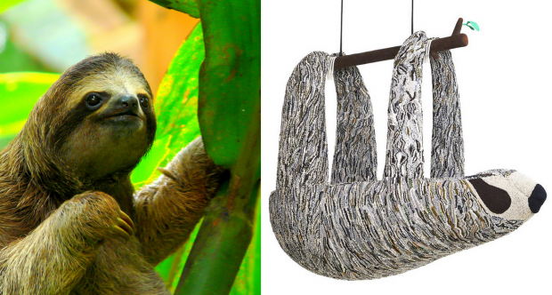

Леонардо Ди Каприо стоит на страже природы

Известный американский актер Леонардо Ди Каприо известен во всем мире, как борец за "здоровье" и благополучие окружающей нас среды. Инстаграм экозащитника заметно отличается от личных микроблогов его коллег и полностью посвящен его благому делу. везда таких фильмов, как "Титаник", "Выживший", "Авиатор" и других, сотрудничает со многими благотворительными организациями, целью которых является защита природы. Вместе с сообществами актер борется против вырубки лесов, ищет пути остановить глобальное потепление, браконьерство и прочее.



А несколько часов назад на страничке киноактера появилась запись о том, что Фонд Леонардо Ди Каприо сотрудничает с дизайнером Porky Hefer, чтобы использовать искусство, для привлечения внимания к проблеме, влияющей на дикую природу.
Творчеством звезда пытается донести общественности, что некоторые виды животных и рыб на сегодняшнее время на грани исчезновения.
Более того, в начале 2018 года стало известно, что Леонардо Ди Каприо присоединился к кампании, которая намеревается провести работы по восстановлению природы Сейшельских Островов. Актер не только примкнул к миссии, но и помог материально. Звезда выделили немалые деньги на то, чтобы план был запущен в действие.